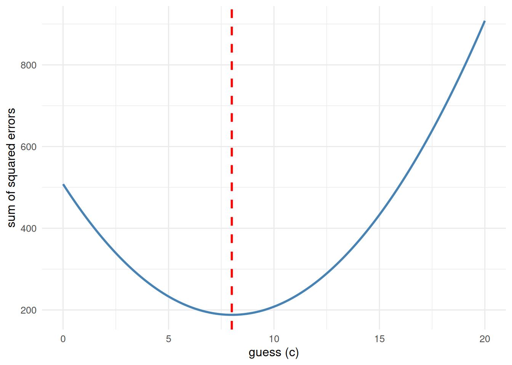
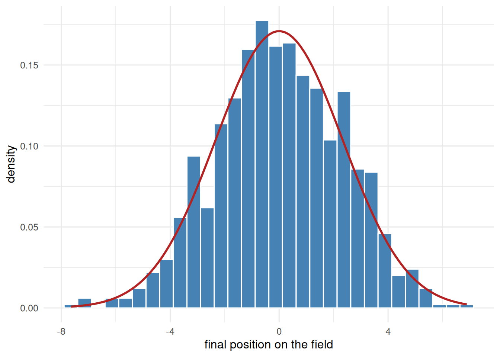

Measures of central tendency are a way to summarize a distribution of values with a single value. This single value is the “best guess” for future, unknown values that may be observed. In this section, you will learn about the most common measures of central tendency and how to use them to make sense of your data.
2.1 Learning Objectives
Learn why a single value can be useful for summarizing a distribution.
Understand the concept of a measure of central tendency.
Learn about the most common measures of central tendency.
Understand how to use measures of central tendency to make sense of your data.
2.2 Three Ways to Say “Typical”
Back in the introduction we asked you to guess a family member’s weight, and claimed your best guess was the arithmetic mean. Here we make good on that claim. There are three classic summaries of “the middle,” and each is the best guess under a different definition of “best.”
NoteWorking in SPSS, Julia, or Python?
The code tabs below assume this chapter’s data is already loaded. Grab the one-file setup for your language from Getting the Book’s Data, run it once, then load what you need by name - this chapter uses ch02-x, ch02-income. For example, book_data("ch02-x") in R, Julia, or Python, or !bookdata name = "ch02-x". in SPSS. Every language reads the same shipped files, so your numbers will match the ones printed here exactly.
library(tidyverse) # dplyr, ggplot2, purrr, tibble, readr, stringr, forcatssource("_common.R") # book-wide helpers: round2(), fmt_p(), tidy2()x <-c(3, 5, 5, 7, 20) # note the outlier# R has no built-in mode; count the values and take the most frequentmode_val <-tibble(x) |>count(x) |>slice_max(n) |>pull(x)tibble(mean =mean(x), median =median(x), mode = mode_val) |>round2()
mean
median
mode
8
5
5
FREQUENCIES VARIABLES=x /STATISTICS=MEAN MEDIAN MODE.
df.x.mean()df.x.median()df.x.mode()[0] # mode() returns every tie; take the first
Mean - the arithmetic average, the balance point of the distribution.
Median - the middle value when the data are sorted; half fall below, half above.
Mode - the most frequent value.
2.3 Why the Mean Is “Best” (and When It Isn’t)
Here is the deep idea that ties this chapter to the entire rest of the book. Suppose you must pick a single number \(c\) to guess every value, and you will be penalized by the squared error of each guess. Which \(c\) minimizes your total penalty? Let’s just try every candidate and see:
# try every candidate guess and record its total squared errorguesses <-tibble(guess =seq(0, 20, by =0.1)) |>mutate(sse =map_dbl(guess, \(g) sum((x - g)^2)))best <- guesses |>slice_min(sse) |>pull(guess)ggplot(guesses, aes(x = guess, y = sse)) +geom_line(colour ="steelblue", linewidth =1) +geom_vline(xintercept =mean(x), colour ="red",linetype ="dashed", linewidth =1) +labs(x ="guess (c)", y ="sum of squared errors") +theme_book()

Figure 2.1: Total squared error for every candidate guess. The valley sits exactly at the mean, which is what makes the mean the least-squares best guess.
The valley of that curve sits exactly at the mean. That is not a coincidence - it is the reason the mean matters. When we do regression later and “minimize the sum of squared residuals,” we are doing this same thing in more dimensions. The mean is least-squares estimation with no predictors.
The median has its own claim to fame: it minimizes the sum of absolute errors, \(\sum |x - c|\). Different penalty, different winner. And the mode simply asks “what shows up most?” - the only one of the three that makes sense for a categorical variable like ice-cream flavor.
2.4 Why the Bell Keeps Showing Up
We keep drawing bell curves, and you are entitled to ask why. Psychologists get told, often by people outside the field, that assuming a normal distribution is naive - that real behaviour is messy and the bell is a convenient fiction. That criticism deserves a real answer rather than a defensive one, and the answer is a demonstration you can run in three lines.
Put a thousand people on the centre line of a football field. Each one takes sixteen steps. Every step is a shove of random size, somewhere between a metre left and a metre right, and every distance in that range is equally likely. Nothing here is bell-shaped: a single step is perfectly flat, with no preference for small shoves over large ones.
Now look at where everybody ends up.
set.seed(2)# 1000 people, 16 steps each. One step is FLAT - any distance from -1 to 1 is# equally likely - so nothing about the ingredients is bell-shaped.walk <-tibble(person =1:1000) |>mutate(position =map_dbl(person, \(i) sum(runif(16, min =-1, max =1))))ggplot(walk, aes(x = position)) +geom_histogram(aes(y =after_stat(density)), bins =30,fill ="steelblue", colour ="white") +# the normal curve implied by the spread we actually gotstat_function(fun = dnorm, args =list(mean =0, sd =sd(walk$position)),colour ="firebrick", linewidth =1) +labs(x ="final position on the field", y ="density") +theme_book()

Figure 2.2: One thousand people take sixteen steps each, every step equally likely to be any distance between -1 and 1. Nothing about a single step is bell-shaped; adding them is what makes the bell.
A bell, and a close one. We did not assume it, choose it, or fit it - it fell out of adding.
The mechanism is worth saying in plain words, because once you see it you will recognise it everywhere. To finish far to the right, a person needs nearly every one of their sixteen steps to push right. There is essentially one way to do that. To finish near the middle, the pushes need only roughly cancel, and there are an enormous number of ways for that to happen. Extremes require agreement; middles do not. Add up enough independent nudges and that lopsidedness in the counting is the bell.
Here is why this matters for psychological science in particular. Look at what our measurements actually are:
A scale score is the sum of a dozen item responses.
A reaction time is the sum of perception, decision, and motor stages.
Height is the sum of many genetic and nutritional contributions.
A difference between group means is built from sums.
These are not variables we hope are normal. They are sums, and sums of many small independent influences are how bells get made. The normal distribution is not an assumption imposed on psychology from outside; for a great deal of what we measure, it is the arithmetic of measurement showing through.
That is a genuine defence, and it has genuine limits, which we take up honestly when the normal becomes our working tool in the z-distribution chapter. For now, notice what the demonstration bought us: a reason the mean sits at the centre of so many distributions, and therefore a reason it so often earns its place as the best guess.
2.5 When the Mean Lies
Look again at that outlier (20). Squaring errors makes the mean very sensitive to extreme values; one billionaire walks into the room and the “average” net worth becomes absurd. The median shrugs it off:
The median (about 42) describes a typical person; the mean (about 749) describes nobody in the room. This is why you should reach for the median whenever a distribution is skewed or outlier-ridden, and the mean when it is roughly symmetric.
NoteThe robust middle ground (a look ahead)
Median or mean isn’t the only choice. Robust estimators - the trimmed mean (drop a fixed fraction of each tail, average the rest) and the MAD (a median-based cousin of the SD) - keep most of the mean’s efficiency while resisting the outliers that wreck it. The mean’s breakdown point is essentially 0% (one bad value can move it anywhere); the median’s is 50%. We develop this fully in Beyond the Normal Curve.
ImportantPick Your “Best Guess” On Purpose
Mean - symmetric, well-behaved data; and whenever you plan to do anything least-squares (which is most of this book).
Median - skewed data, outliers, incomes, reaction times, home prices.
Mode - categorical data, or when you literally care about the most common category.
There is no universally “correct” measure of center. There is only the one that answers your question honestly.
2.6 Challenge
TipDo One Yourself
Generate a right-skewed variable, e.g. y <- rexp(200). Compute its mean and median. Which is larger, and why?
Reproduce the “mean minimizes squared error” plot for y, then make a second plot of \(\sum|y - c|\) and confirm its minimum sits at the median.
Add one wild outlier to y (say, c(y, 500)) and recompute both. Which summary barely moved? State the lesson in one sentence.
2.7 Where We Go Next
A center is only half the story. Two distributions can share the same mean and be wildly different - one tightly packed, one spread all over. That spread is our uncertainty, and it is the single most important quantity in statistics. On to dispersion.